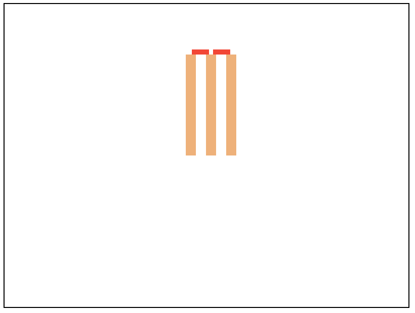

Interlude: SVG¶
So far, we’ve been using Racket terms to express and work with ideas. In this section we take an detour and look at SVG - Scalable Vector Graphics - a “language” intended to make it easy to include and show drawn pictures and animations in browsers. It is a large language, so we’ll only be looking at a small part of it relatable to what we’ve discussed regarding modelling images.
An example¶
Copy the following code, paste it into a new file named example.svg and
open it in your browser.
1<svg width="400" height="300" xmlns="http://www.w3.org/2000/svg">
2 <rect x="180" y="50" width="10" height="100" fill="sandybrown"/>
3 <rect x="200" y="50" width="10" height="100" fill="sandybrown"/>
4 <rect x="220" y="50" width="10" height="100" fill="sandybrown"/>
5 <rect x="186" y="45" width="17" height="5" fill="red"/>
6 <rect x="207" y="45" width="17" height="5" fill="red"/>
7</svg>
That should look like the picture shown below –

Fig. 25 The rendered image of the SVG shown in Listing 13.¶
What we’ve drawn is a bunch of rectangles, but when you see the image, you might recognize the image as cricket stumps with bales. This is partly what we’ve been labouring about as the distinction between represented information and the “meaning” we attribute to it.
Now if we pay attention to the form of it, you might relate to how we thought about images in Racket.
(overlay (rect 180 50 10 100 'sandybrown)
(rect 200 50 10 100 'sandybrown)
(rect 220 50 10 100 'sandybrown)
(rect 186 45 17 5 'red)
(rect 207 45 17 5 'red))
The above might be an equivalent expression of the same construct using our
“image words”. So we see that there is a kind of correspondence between
what we’ve notated as <rect x="220" y="50" width="10" height="100" fill="sandybrown"/>
and (rect 220 50 10 100 'sandybrown). One might imagine we have defined
rect something like –
(define (rect x0 y0 width height colour)
...)
and the various parameters we’re giving in (rect 220 50 10 100 'sandybrown)
are attributed to the corresponding arguments.
We also see that the svg construct roughly parallels what (overlay ...)
conveys, though with some additional information which we might’ve given
our render-image word.
We call such <svg>..</svg> tags which might have child tags within.
We call the width="200" and such values attributes. The entire “XML”
syntax [1] is (almost) just that. Tags like line 4 of Listing 13
are shorthand for <rect x="220" y = "50" width="10" height="100"
fill="sandybrown"></rect> – i.e. a tag which has no children.
Note
Thus “SVG” offers a notation and vocabulary to describe images by construction with similar principles of organization to how we’ve been thinking about images, even though we represented our images as functions from \((x,y)\) coordinates to colour.
SVG element kinds¶
Much like our model of a constructed image, SVG provides basic vocabulary to express simple geometric constructs like circle, rect, line, ellipse which directly correspond to shown graphics. It also provides ways to combine one or more such constructs into compounds, like g (short for “group”) which give means to transform what they contain in various ways.
Much like our define word lets us introduce new identifiers that reference images
or image making words, SVG offers a defs tag that can introduce names for drawn elements
that can then be reused within the SVG image with use.
Task
In our “stump and bales” image, each stump is pretty much the same except
for appearing in two more “translated” positions. Similarly, the two bales
are also identical exception for translation. Use <defs> (defs) tag to
define a #stump and #bale drawing and <use> (use) it in the
different positions so that the picture’s SVG code does not have so much
repetition in it. This is a minimal form of “abstraction” possible in SVG.